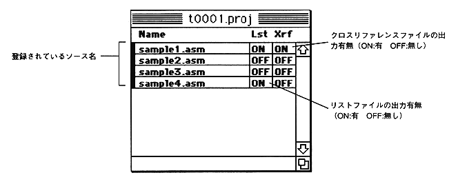
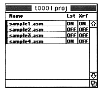

Cross reference and list file output switches are
List file (Lst): ON
Cross reference (Xrf): OFF
It has become.
To change this, click the switch character (ON or OFF) you want to change with the mouse to reverse the switch.
You can also change the order of registered sources.
This is useful when checking a single file because no assembly is performed after the file in which the assembly error occurred.
Drag the file you want to change the order with the mouse, bring it to the place you want to change, and drop it.
